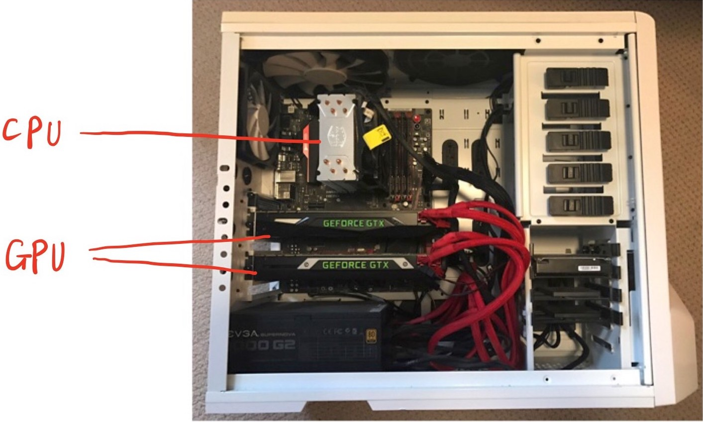
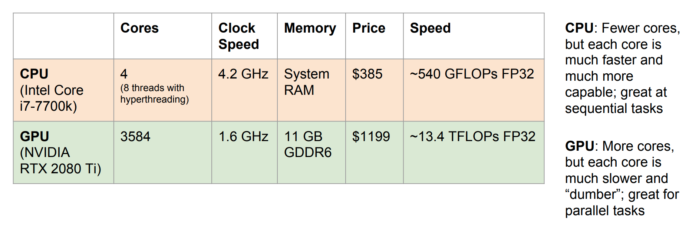

CPU v.s GPU in Machine Learning
In this article, I will explain what CPU and GPU are and how do these two compare in mahine learning
We’ve seen many time when CPU and GPU are mentioned in machine learning training tasks, especially in deep learning. We always say that we use GPU to train our model, but what does it mean? What are CPU and GPU and how do they work in different tasks?
Let’s first take a look at their location in a computer.

Stanford CS n, Justin Johnson
CPU stands for Central Processing Unit, and
physically it is a little chip. It is thought as the brain of
a computer where most calculations take place.
Basically, a CPU has two main components:
- Arithmetic logic unit (ALU), which performs arithmetic and logical operations.
- Control unit (CU) extracts instructions from memory and decodes, executes them, calling on the ALU when necessary.
GPU stands for Graphics Processing Unit and
it was originally invented and used for rendering 3D computer
graphics or games, in order to free up CPU to do some other
tasks. The reason why GPU is used for graphics, by its name,
is that in graphics or games, there are many matrix
multiplication and convolution and GPU is designed to do it
fastly and efficiently. That being said, GPU is less flexible
but more specialized and parallelly computable.
Here is a simple comparison between the most advanced CPU and GPU.  Stanford CS n, Justin Johnson
We will do many matrix multiplication in deep learning, and each entry operation(row dot with column) is considered as a seperate running in parallel. Imagine with a GPU, every entry of output matrix is computed in parallel(due to so many cores in GPU) and thus the whole computation is super fast.
Aside
Speaking of GPU, there is a related topic that I want to touch and that is Deep learning frameworks. As of now, we have many framewroks that are widely used in training data, the most popular ones being TensorFlow by Google and Pytorch by Facebook. Some other commonly used ones are Caffe, MXNet, etc.
The work flow for neural net is usually forward propogate, back propogate to compute gradient, update weights, and repeat until enough iterations. Becasue of that, here are some reasons why in practice do you want to use frameworks instread writing the code yourself.
-
Easily build computational graphs
-
Easily compute gradients in computational graphs
-
Run it all efficiently on GPU